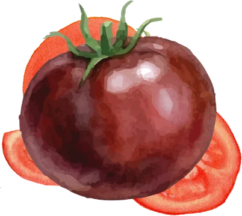
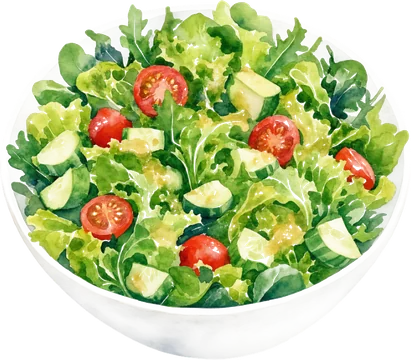
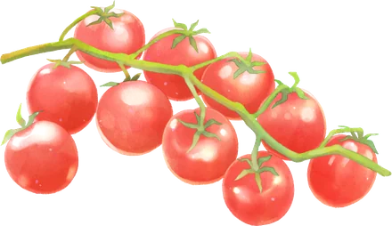
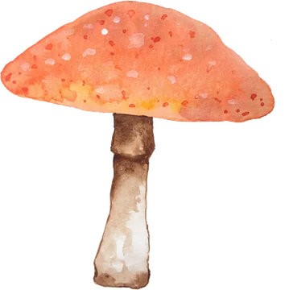
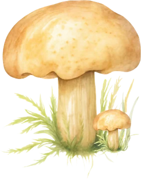
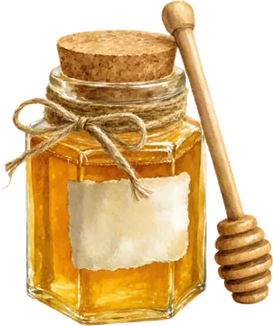
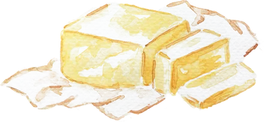
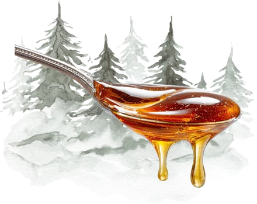
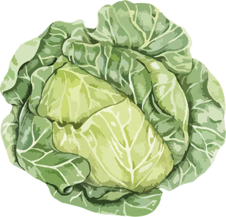

Shopping for food in Andorra means choosing between two countries' supermarkets, plus a handful of Andorran producers whose honey, cheese and mountain specialities you won't find anywhere else. Here's how to make the most of both.
French or Spanish? The supermarket question
Most of Andorra's groceries come from Spain and France, and so do most of its supermarket chains. Which you choose shapes what ends up in your basket.
The French chains
- Carrefour, run in Andorra by Grup Pyrénées. Its flagship, Carrefour Andorra 2000 at Avinguda de Tarragona 26 in Andorra la Vella, has more than 4,500 m² and closes only on 1 January, 8 September and 25 December. Smaller Carrefour Express shops are dotted around the parishes.
- E.Leclerc, strong on French wines and cheeses.
- Super U, inside the CCA shopping centre at Avinguda Meritxell 92, Andorra la Vella.
- Biocoop, the French organic cooperative, in Escaldes-Engordany.
The Spanish and Catalan chains
- Caprabo, the Catalan chain owned by Eroski, with branches including one inside illa Carlemany.
- Condis, another Catalan name, with smaller shops such as Condis Shop in La Massana.
- Family Cash, from Valencia, which opened its first store outside Spain, around 6,145 m² over two floors, at the Epizen centre in Sant Julià de Lòria in 2024, in partnership with Grup Pyrénées.
- Ametller Origen, the Catalan fresh food chain known for its own farm produce and ready meals, with three shops: Andorra la Vella, Canillo and Sant Julià de Lòria, which opened in December 2024.
- Veritas, the Catalan organic supermarket chain, with a shop in Andorra la Vella.
| If you want… | Head for |
|---|---|
| French cheese, butter, crème fraîche and wine | E.Leclerc, Super U or Carrefour |
| Jamón, olive oil, conserves and Spanish wine | Caprabo, Family Cash, Ametller Origen or the Pyrénées food counters |
| Organic, gluten free and vegan | Veritas, Biocoop, de bon Gra, or the ranges at Carrefour Andorra 2000 and Caprabo |
| Gourmet and Andorran produce | Pyrénées in Andorra la Vella, village shops and the producers below |
| A shop on a Sunday or holiday | Carrefour Andorra 2000, closed only three days a year |
A rule of thumb rather than a rule: most supermarkets stock both French and Spanish brands.
Greengrocers and health food shops
For the best fruit and vegetables, locals often skip the supermarket altogether.
- La Bona Fruita, Andorra la Vella: a greengrocer loved for very fresh fruit and vegetables.
- Fruites Molina, Andorra la Vella: a fruit and vegetable wholesaler that also serves the public.
- Disfruta & Verdura: fruit and vegetables, including boxes of seasonal produce.
- de bon Gra, Andorra la Vella: a natural and health food shop, with in store shopping, click and collect, and delivery.
The produce worth seeking out
These are the ingredients that make shopping here a pleasure, from the greengrocer counters to Andorra's own small producers.

Tomàquet morat
Purple tomato
A deep plum tomato with green shoulders and a rich, sweet flavour. Slice it thickly with olive oil and flaky salt. We found it at Pyrénées for €5.49 a kilo in October 2026.
Late summer to autumn
Cor de bou
Oxheart tomato
The big, ribbed Catalan favourite: meaty, with few seeds. Best simply sliced, so look for it at the greengrocer counters from midsummer.
Summer
Tomàquet de penjar
Hanging tomato
Small, thick skinned tomatoes tied in bunches to keep through the winter. Halve one and rub it over toasted bread for pa amb tomàquet.
Autumn and winter
Rovelló
Saffron milk cap
Andorra's favourite wild mushroom: orange, with a green tinge where it bruises. Grill it with garlic and parsley. The 2025 season was one of the best in five years.
Autumn
Cep
Porcini
The prized forest mushroom, with a chestnut cap and fat white stem. Look for it in late summer and autumn, especially after rain.
Late summer to autumn
Mel d'Andorra
Mountain honey
Naturalis in Canillo makes high altitude honey and mead, and Autèntic, also in Canillo, sells seven varieties that change with the flowers near each hive.
All year
Formatge d'ovella
Sheep's milk cheese
Casa Raubert in La Massana makes its cheeses from the milk of its own flock. Serve with Andorran honey.
All year
Nectum
Fir cone syrup
A rare one: syrup from fir cones picked by hand from late August, made by El Rebost del Padrí in Andorra la Vella. Try it over yoghurt or in a cocktail.
Made in late summer
Col i patata
Winter cabbage and potato
The makings of trinxat, the mountain dish of cabbage and potato fried with bacon. At its best after the first frosts.
Winter
Buying straight from Andorran producers
Only a small share of Andorra's food is grown here, because the land is so steep, which makes local produce all the more special. Look for the official "Producte d'Andorra" mark on things made entirely in the country.
- Eggs and vegetables: Can Sona in Sant Julià de Lòria, whose hens are fed certified organic grain, and Cortal Llumeneres, also in Sant Julià, both grow seasonal vegetables.
- Jams: Casa Gendret in Sant Julià de Lòria makes jams from its own fruit with no additives, and opens the farm to visitors from June to October. El Pastador in La Massana makes jams, jellies and chutneys.
- Meat: Carn d'Andorra beef carries a protected geographical indication. Cal Jordi in Canillo and Els Escaubells in Andorra la Vella make cured sausages.
The monthly market
From May to October, the Mercat de la Vall fills the streets of Andorra la Vella's historic centre on the first Saturday of each month, from 11 am to 8 pm, with local produce, regional products and crafts. It's the easiest way to meet the producers in one place. Andorran food and where to eat it.
Prices and stockists checked October 2026. Seasonal produce depends on the weather, so availability varies from year to year. See also shopping in Andorra for customs allowances.